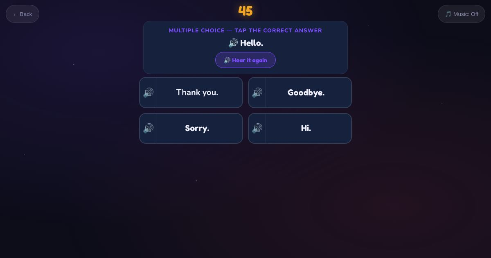

For teachers and tutors
About Greetings
Everyday exchanges for the first weeks of English. The learner hears a greeting or courtesy phrase, like "How are you?", "Thank you." or "See you next week.", and taps the right reply. Other rounds ask short personal questions: "What is your name?", "Where are you from?", "How old are you?"

How to play
- Listen to what the person says.
- Read the four replies.
- Tap the right one.
Play it as a class
Choose Greetings in the Teacher Game, then have students say the replies to each other.